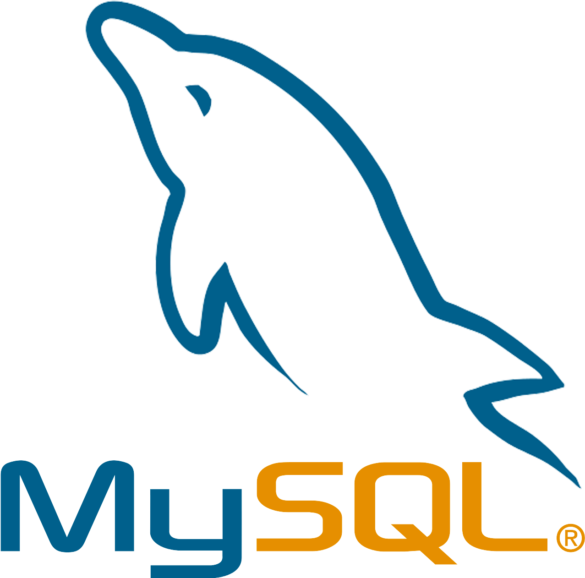

БД бывают реляционными и нереляционными.
Остановимся на первых. Ещё их называют табличными — из-за того, что все данные они хранят в виде таблиц. Эти таблицы внутри связаны друг с другом, поэтому получается связная структура.
PostgreSQL

PostgreSQL — это СУБД c открытым исходным кодом.
Популярностью у разработчиков и администраторов база данных PostgreSQL обязана своей исключительной гибкости и целостности. Например, база данных PostgreSQL поддерживает как реляционные, так и нереляционные запросы.
Oracle

Oracle Database - это СУБД, разработанная корпорацией Oracle.
База данных Oracle предлагает расширенные функции, такие как высокая доступность, масштабируемость, безопасность и настройка производительности.
MySQL
MySQL — свободная реляционная система управления базами данных.
Разработку и поддержку MySQL осуществляет корпорация Oracle. MySQL является решением для малых и средних приложений. Гибкость СУБД MySQL обеспечивается поддержкой большого количества типов таблиц: Читать далее. . .
SQLite

SQLite — компактная встраиваемая СУБД.
Исходный код библиотеки передан в общественное достояние. В 2005 году проект получил награду Google-O'Reilly Open Source Awards. SQLite поддерживает динамическое типизирование данных. Сама библиотека SQLite написана на C, но существует большое количество привязок к другим языкам программирования.